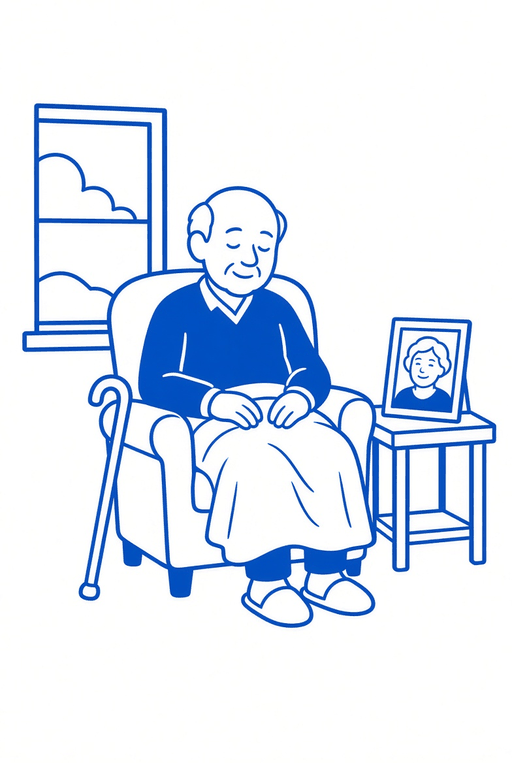

sterven van
to die of (old age, hunger, thirst)
drawnin the game
- Scene
- an old person sits in an armchair by a window with eyes closed, hands loose in the lap and a blanket over the knees. A walking stick leans against the chair and a photo of a partner stands on the side table. The room is calm and there is no hospital equipment.
- Must read
- dying of old age, not of a disease.
- Avoid
- a hospital bed and a drip (sterven aan); a doctor; a car; a young face.
- Pair / note
- van ouderdom is the fixed phrase; aan takes an illness.
- Example
- Mijn oma is van ouderdom gestorven.
My grandmother died of old age. - Build
- Mijn oma is van ouderdom gestorven
- Build
- Mijn opa is van ouderdom gestorven
- Check question
- Ligt de persoon in een ziekenhuisbed? Nee
- Alt text
- Een oud iemand zit met gesloten ogen en een deken over de knieën in een stoel bij het raam, een wandelstok ernaast en een foto op het tafeltje.
sterven-van-ouderdom.png · nieuw
sterven van
to die of (old age, hunger, thirst)
drawnin the game
- Scene
- a teenage boy sits slumped at a table, one cheek on his forearm, the other hand holding a fork upright. In front of him is an empty plate. He looks sideways at a closed oven across the room. The empty plate and the upright fork are the clearest marks.
- Must read
- being very hungry, said as an everyday exaggeration.
- Avoid
- medicine, a drip or a doctor (sterven aan); a full plate being eaten; a soup spoon held to the light (the soep card); a thin or ill-looking body.
- Pair / note
- Ik sterf van de honger is an everyday exaggeration for 'I am starving'; van names the cause, aan names an illness.
- Example
- Ik sterf van de honger!
I am starving! - Build
- Ik sterf van de honger
- Build
- Wij sterven van de honger
- Check question
- Is het bord leeg? Ja
- Alt text
- Een tiener hangt met zijn wang op zijn arm aan tafel voor een leeg bord, een vork rechtop in zijn hand, en kijkt naar de oven.
sterven-van-de-honger.png · nieuw
sterven van
to die of (old age, hunger, thirst)
drawnin the game
- Scene
- a woman in walking clothes with a rucksack sits on a large rock beside a path. She holds a water bottle upside down above her open mouth with one hand; nothing comes out of it. The other hand hangs loose at her side. The upside-down empty bottle above the open mouth is the clearest mark.
- Must read
- being very thirsty, said as an everyday exaggeration.
- Avoid
- a sun with rays (the zon card); medicine or a doctor (sterven aan); someone lying on the ground; a shop or a tap with water running; a label on the bottle.
- Pair / note
- Ik sterf van de dorst is an everyday exaggeration; van names the cause.
- Example
- Ik sterf van de dorst!
I am dying of thirst! - Build
- Ik sterf van de dorst
- Build
- Wij sterven van de dorst
- Check question
- Komt er water uit de fles? Nee
- Alt text
- Een wandelaarster met een rugzak zit op een rots en houdt een lege waterfles ondersteboven boven haar open mond.
sterven-van-de-dorst.png · nieuw
sterven van
to die of (old age, hunger, thirst)
drawnin the game
- Scene
- a bare waiting room with a row of four plastic chairs. One young man sits slumped very low on the middle chair, legs stretched far out, arms hanging down beside the seat, head tipped back and eyes half closed. The other chairs are empty. The long slumped body and the hanging arms are the clearest marks.
- Must read
- being very bored, said as an everyday exaggeration.
- Avoid
- a hospital bed or a drip (sterven aan); a clock with numbers; a phone in the hand; a sofa (the dromen van card); an empty plate (the honger card).
- Pair / note
- Ik sterf van verveling is an everyday exaggeration; van names the cause, without the.
- Example
- Ik sterf van verveling.
I am dying of boredom. - Build
- Ik sterf van verveling
- Build
- Wij sterven van verveling
- Check question
- Zitten er veel mensen in de wachtkamer? Nee
- Alt text
- Een jongeman hangt heel laag onderuit op een plastic stoel in een lege wachtkamer, benen gestrekt, armen omlaag en het hoofd achterover.
sterven-van-verveling.png · nieuw